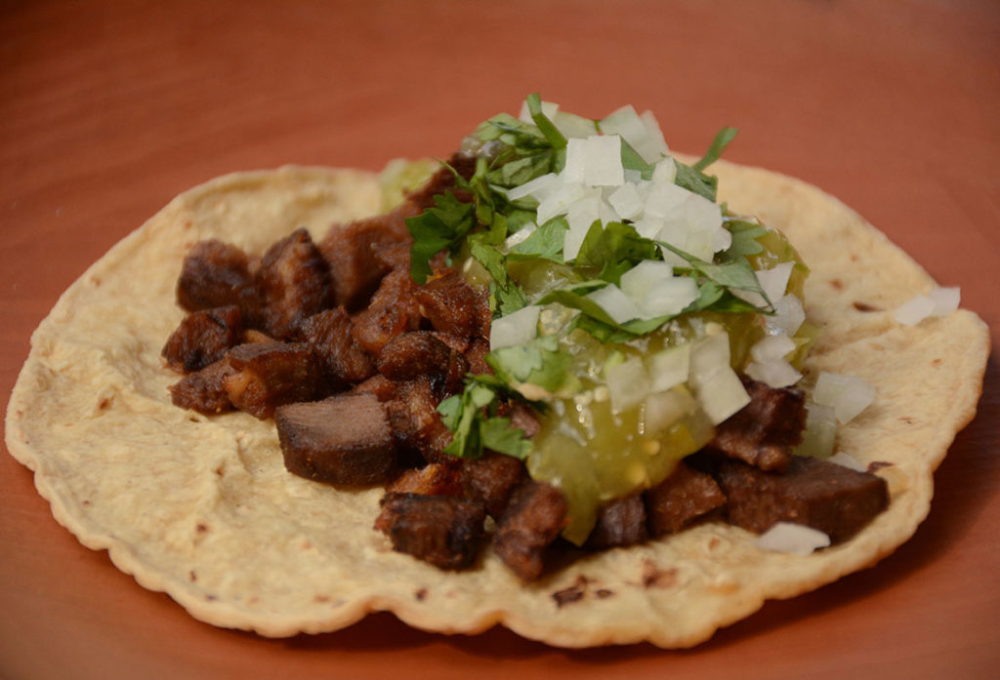

Tacos

Ingredients
- 1 whole beef tongue weighing 1.5 to 2 kg, cut into 2 or 3 pieces
(you can ask the butcher or cut it yourself)
- 1 head of garlic, skin removed, cut in half horizontally
- 1 white onion, skin removed, cut in half horizontally
- 5 whole dried bay leaves
- 15 whole black peppers
- 1 teaspoon dried marjoram
- 1 teaspoon dried thyme
- 1 teaspoon dried oregano
- 1 teaspoon Salt plus extra for seasoning
- Freshly ground black pepper to taste
- 2 tablespoons of vegetable oil
- 1/2 cup chopped white onion, divided
(1/4 to cook with the meat and 1/4 to serve at the end)
- 1/4 cup chopped fresh cilantro leaves
- 1 portion of cooked green sauce
- 1 lemon cut into quarters optional
- 10 to 12 corn tortillas
Preparation
- In a pot, put the tongue, garlic, onion, bay leaves, peppers, marjoram, thyme,
oregano and 1 tablespoon of salt.
Add water to cover 5 cm above the tongue.
- Let it come to a boil over high heat and then reduce it to medium heat.
Cover the pot and boil for 3 hours, or until the tongue is completely soft.
Check the water halfway through cooking and add more hot
water if necessary to keep the tongue covered.
- Put out the fire. Let the tongue cool in the liquid until you are ready
to serve it.
- Remove the tongue from the pot and place on a cutting board.
With your hands and a small knife, remove the outer skin and the bottom part of the tongue,
which would be stuck to the mouth of the beef, since it is greasier and harder.
It is easier to peel the tongue if it is still warm or hot.
- Then cut it into 1/2 cm slices and then into 1/2 cm squares.
- In a skillet, heat oil over medium-high heat. Add 1/4 cup chopped onion
and sauté for a couple of minutes. Add the tongue, season with salt and pepper
to taste, and cook for 4 to 5 minutes, stirring occasionally,
until lightly browned and the onion is completely soft. Put out the fire
- Heat the tortillas on a previously heated comal over medium heat until they are lightly golden.
Put them in a clean kitchen towel to keep them warm, or in a tortilla holder.
- Transfer the tongue to a bowl and assemble the tacos: put a generous portion
of tongue on the tortilla, followed by a spoonful of salsa verde and garnish
with fresh chopped onion and cilantro.
Add a few drops of lemon juice if you wish.